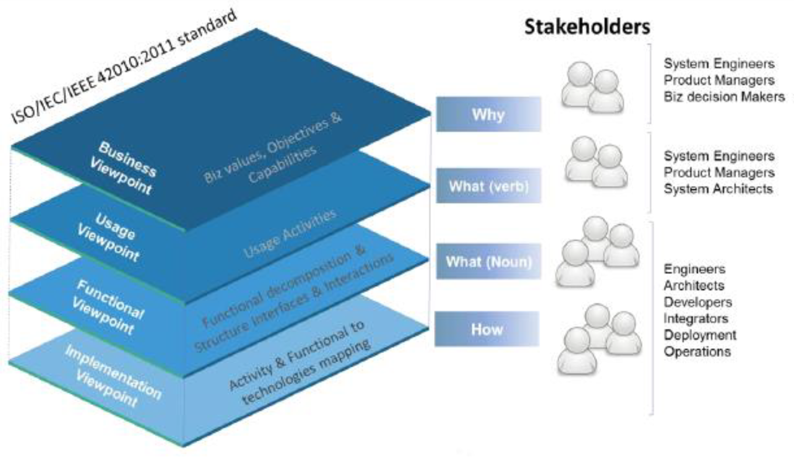
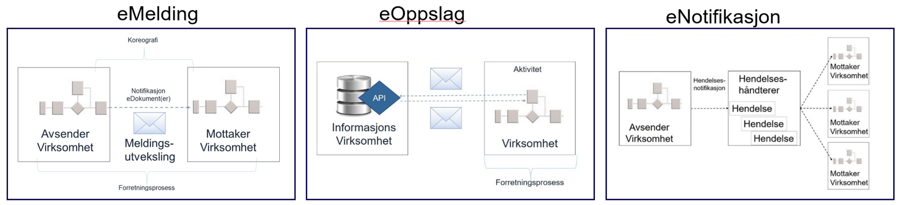

Hva kom først, referansearkitekturen eller løsningen (utkast 1)?
Du er i godt selskap om du er usikker på hva som er riktig svar på dette spørsmålet. I dette innlegget vil jeg gi noen hint og fortelle om hva referansearkitekturer er, hvem det er for, hvor vi står, og hvor vi går i utviklingen av denne formen for veiledning i Norge. Mange ser nytteverdien og ønsker seg felles referansearkitekturer. Det handler om å bygge gode digitale løsninger.
1. Hva er en referansearkitektur, egentlig?
Hus kan være skreddersydd, modulbasert eller masseprodusert, men er koplet til samme ledningsnett. Ingen byer er like, men de fleste byer er bygd ut fra samme krav til innbyggertjenester. Mellom byene går det veier og toglinjer som møtes på midten, og vi har et digitalt internett som gjør at vi kan møtes uten å reise.
Dagens hus, byer og infrastrukturer er kompliserte, og mange fagdisipliner må inn og gjøre sin del av jobben når noe skal bygges. Det må finnes rom for å tenke nytt, men det må også finnes bygningsforskrifter som sikrer at husene ikke raser sammen. Vi har heller ikke råd til å tenke nytt hver gang. Vi bygger med byggeklosser, ut fra mer eller mindre faste oppskrifter.
I min jobb bygger vi ikke hus, men digitale løsninger, og jeg kaller oppskriftene for referansearkitekturer.
Her er min enkle definisjon av hva som menes med dette begrepet:
2. Hvem er referansearkitekturer for?
En og samme referansearkitektur kan ha flere interessenter – det kommer an på hvor godt en kan avgrense problemstillingene. Som arkitekt, ønsker jeg meg modeller med presise og konsistente beskrivelser av hvordan byggeklossene henger sammen. Er du jurist, må du kanskje forstå noen av de tekniske spesifikasjonene for å utforme avtaler. Er du beslutningstaker, holder det kanskje å kjenne til bruksområde, kostnader og strategiske føringer.
Arkitekter bruker begrepet «viewpoints» om å lage brukertilpassede framstillinger for ulike interessenter. På norsk kalles det også visninger eller perspektiver. Her er en framstilling av en god, gammel ISO-standard for arkitekturbeskrivelser som jeg synes illustrerer dette godt:

Legg her spesielt merke til skillet mellom «functional» og «implementation». Vi snakker tilsvarende om arkitekturbyggeklosser (f.eks. regnearkprogram) og løsningsbyggeklosser (f.eks. Excel).

Referansearkitekturer kan være helt generiske eller fungere som faste løsningsmaler som bare skal utplasseres, eller det kan være noe midt imellom.
Generiske referansearkitekturer er nyttige for å sammenlikne og rydde i arkitekturer og løsninger, f.eks. for å få tjenester til å spille bedre sammen på tvers av sektorene. Løsningsnære referansearkitekturer er nyttige for de som skal lage løsninger raskt og effektivt, men kan virke begrensende om de gjøres for detaljerte, eller om det gis for harde føringer om bruk. Nasjonale referansearkitekturer viser bruk av nasjonale fellesløsninger, men for å være relevante for sektorene i dagens situasjon, må de samtidig kunne tilpasses løsningslandskapet i sektorene.
I økosystemet for digital samhandling og tjenesteutvikling fungerer referansearkitekturer som rammer for å bygge løsningsbyggeklosser etter mønster av arkitekturbyggeklosser. Også i utviklingen av referansearkitekturer, kan aktørene i økosystemet bidra, f.eks. gjennom smidig utvikling av arkitekturer og løsninger.
3. Hvor står vi?
KS og regjeringens digitaliseringsstrategi - Én digital offentlig sektor - har som mål at offentlige tjenester skal oppleves sammenhengende og helhetlige av brukerne, uavhengig av hvilke virksomheter som tilbyr dem. Dette stiller krav til samhandling på tvers av virksomheter og sektorer, samt på tvers av fagdisipliner.
En forutsetning for all samhandling er evnen til å utveksle informasjon. Da vi startet arbeidet med nasjonale referansearkitekturer, ble det definert følgende tre hovedmønstre for dette:

Det finnes nå en samlet nasjonal referansearkitektur for datautveksling, der disse mønstrene inngår. Gjennom intervjuer og spørreundersøkelser i 2020, har vi fått gode tilbakemeldinger med tanke på nytteverdien, men det er samtidig sterkt ønsket at vi arbeider videre med dette området; i tillegg til at vi går inn på nye områder.
4. Hvor går vi?
Vi vil forbedre det vi har innen området datautveksling, i takt med utviklingen. F.eks. er eMelding som digitalt «jernbanenett» for meldingsutveksling i Norge fremdeles en god ide, men det finnes alternative løsninger som fungerer til sitt bruk og tilfredsstiller «byggeforskriftene» med tanke på informasjonssikkerhet og etterlevelse. Det kan være komplisert å forholde seg til alternativer, men da er god veiledning viktig.
Vi har også fått innspill og ønsker om felles referansearkitekturer innen flere andre områder, slik som sammenhengende tjenester, saksbehandling, digital tvilling, smarte byer, stordata, dataanalyse og informasjonssikkerhet, for å nevne noe.
Digdir har ikke nok ressurser til å dra dette lasset alene. Vi må prioritere bort noe, og vi må jobbe smart.
Vi må blant annet fortsette å ta hjem viktig EU-arbeid. Vi bygger allerede på European Interoperability Reference Architecture. Suksessen med eMelding innen e-handel har mye å gjøre med at den er basert på EUs CEF eDelivery. EU videreutvikler nå eDelivery med REST og API-er som alternativ til asynkron meldingsutveksling. Vi følger også med på forskningsrapporter som Reference Architecture for Cross-Domain Digital Transformation. Her gjelder det å følge med for den som vil henge med.
Vi må også samarbeide med sektorene. Det finnes allerede mye bra som er gjort i sektorene som bør løftes opp og deles på tvers. For deling av data og datamodeller har vi Felles datakatalog. Hvorfor deler vi ikke også referansearkitekturer og arkitekturmodeller i en tilsvarende katalog?
Hva kom først? Egget kom før høna, den er grei. Spørsmålet om referansearkitekturer eller løsninger er noe annet, men neste gang du vil lage en løsning, tenker du kanskje referansearkitektur først?